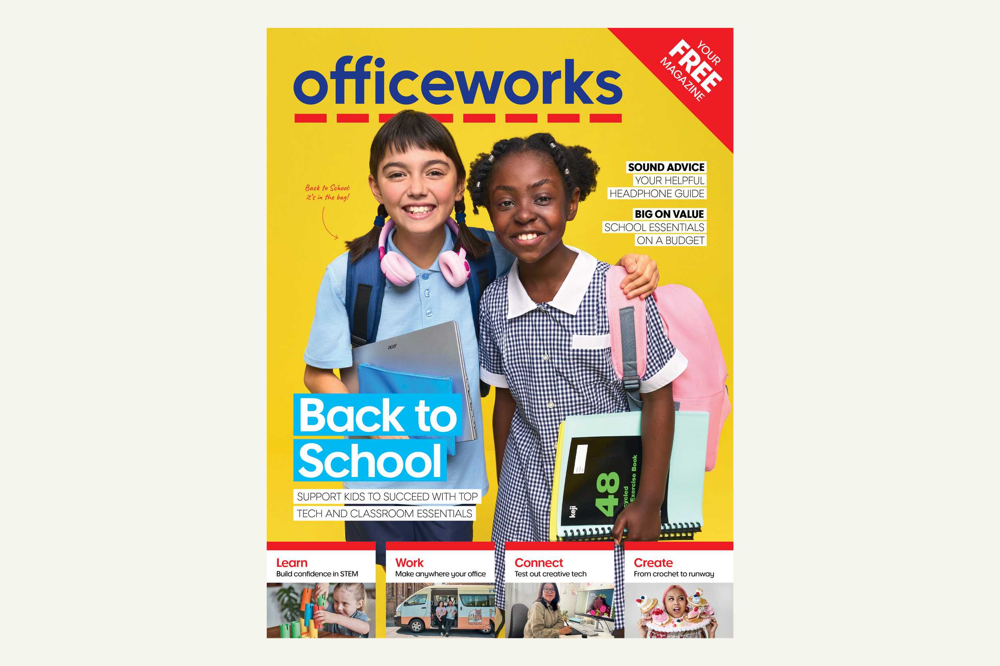
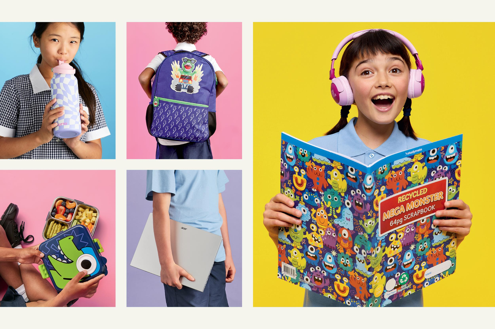
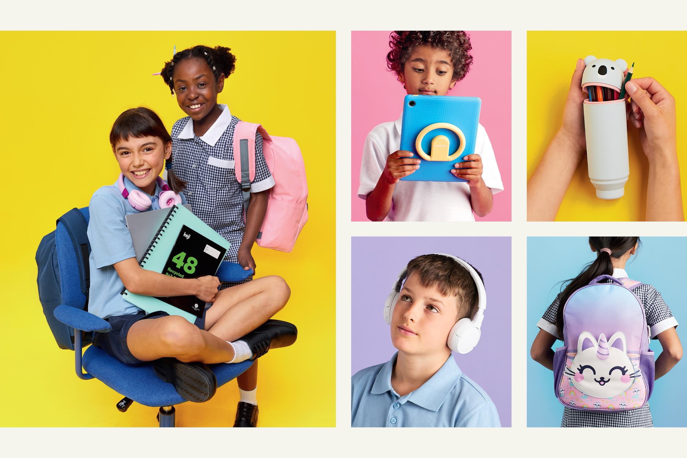
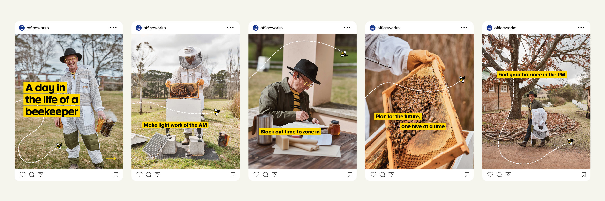

Back to School campaign
Officeworks
The start of the year is a key trading period for Officeworks. For 2026, the brief was to develop a campaign that felt bright and engaging, while clearly reinforcing the brand’s value proposition. The campaign was shot over three days in Sydney, with a separate cover shoot in Melbourne, and rolled out across digital, print and in-store environments.
Campaign imagery


Organic social carousel

Paid social video